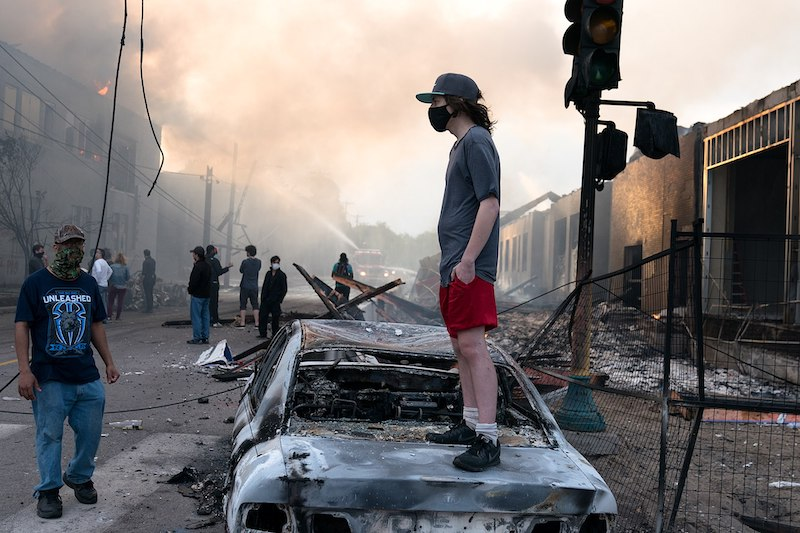

Largest US Protests
Five Largest Protests in US History
by H CONLEY

List of the 5 biggest US protests
George Floyd protests (2020)
Womens March (2017)
March For Our Lives (2018)
Womens March (2018)
March on Washington for Lesbian, Gay and Bi Equal Rights and Liberation (1993)
Sources
Wikipedia.org